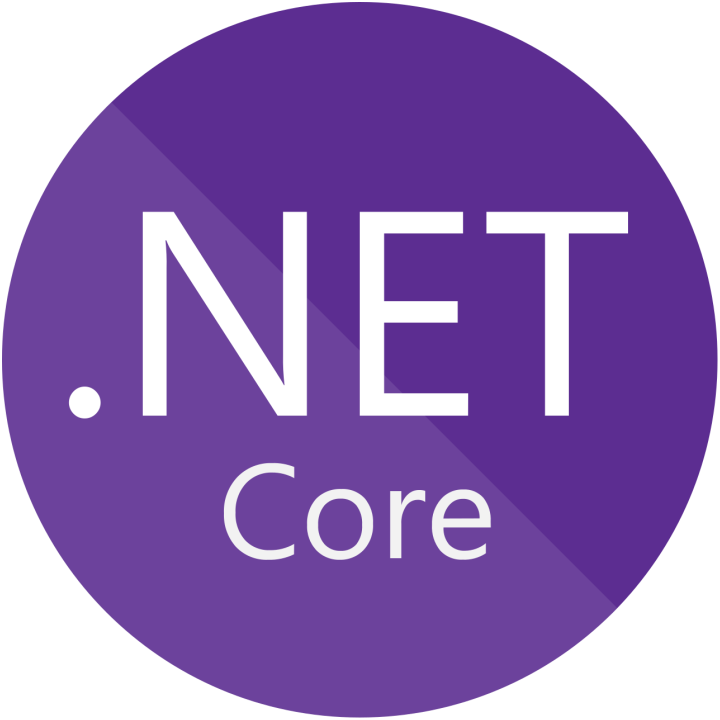

Development
Mein Entwicklungsschwerpunkt liegt im Microsoft-Ökosystem mit C#, ASP.NET Core und modernen Webtechnologien. Dabei konzentriere ich mich auf die Entwicklung praxisnaher Anwendungen mit direktem Bezug zu IT-Infrastruktur, Administration und Automatisierung.
Ein besonderer Fokus liegt auf der Entwicklung von Webanwendungen und REST-APIs, die administrative Prozesse vereinfachen und technische Abläufe effizienter gestalten.
Viele meiner Projekte verfolgen das Ziel, wiederkehrende Aufgaben zu automatisieren, Informationen zentral bereitzustellen oder Infrastrukturkomponenten über moderne Weboberflächen zugänglich zu machen.
Für die Umsetzung nutze ich hauptsächlich ASP.NET Core, Entity Framework sowie aktuelle Webtechnologien. Dabei lege ich Wert auf saubere Architekturen, nachvollziehbare Code-Strukturen und eine langfristig wartbare Entwicklung.
Die Versionsverwaltung erfolgt über Git und GitHub. Dadurch können Projekte strukturiert entwickelt, dokumentiert und kontinuierlich erweitert werden.
Für Deployment und Hosting nutze ich Microsoft Azure. Anwendungen werden beispielsweise über Azure Static Web Apps oder weitere Azure-Dienste bereitgestellt, wodurch moderne Entwicklungs- und Deploymentprozesse bereits früh Bestandteil meiner Projekte sind.